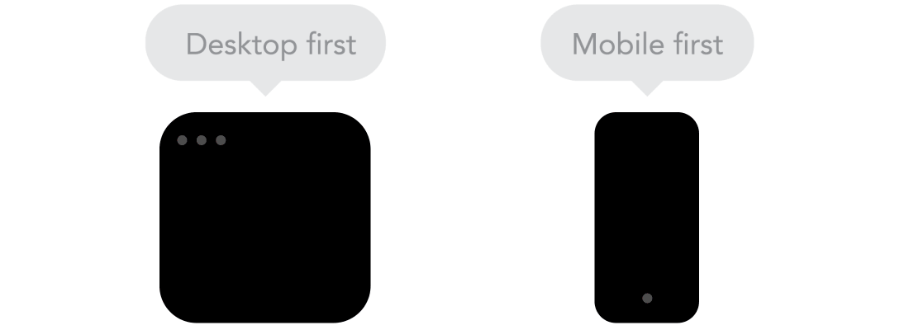
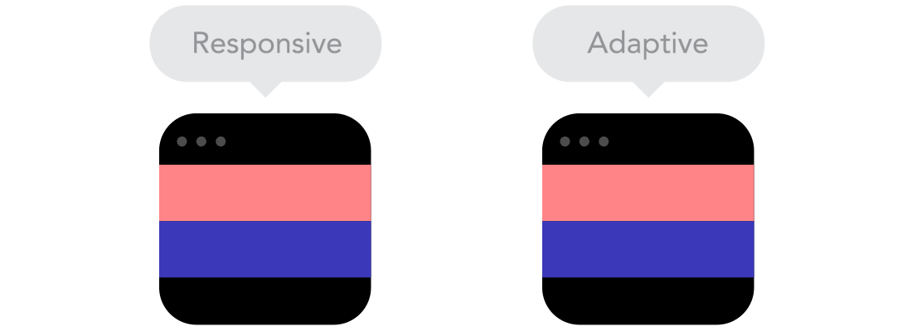
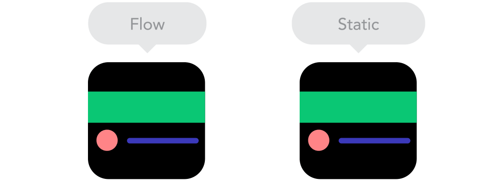
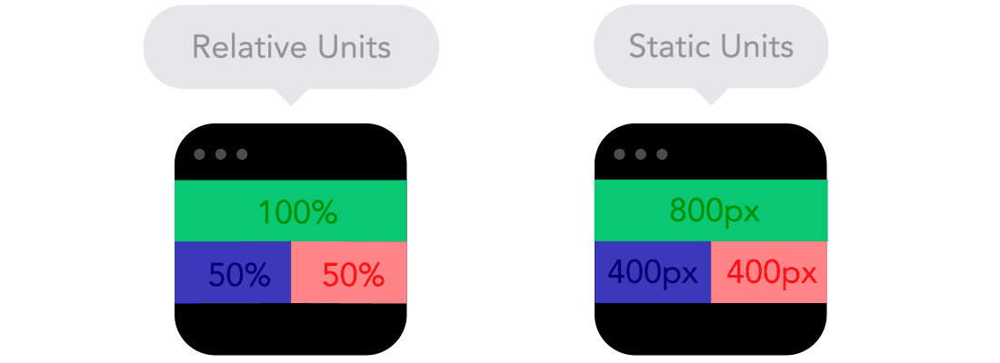
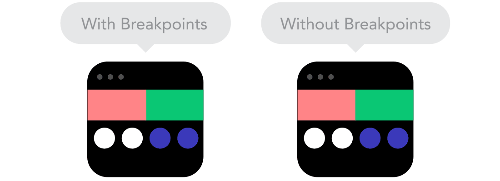
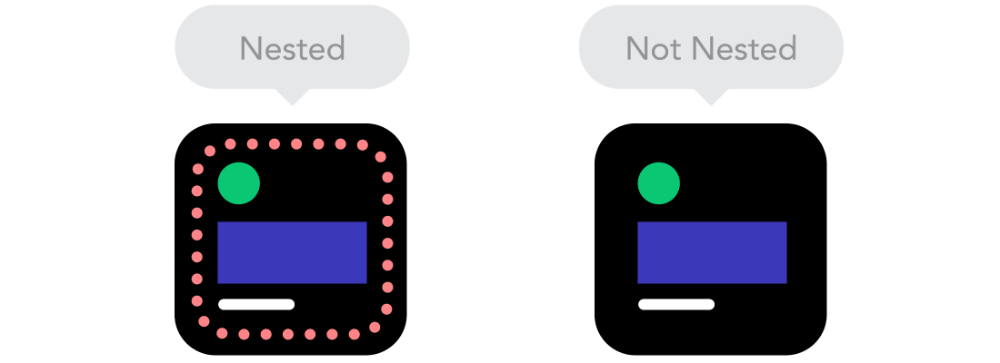
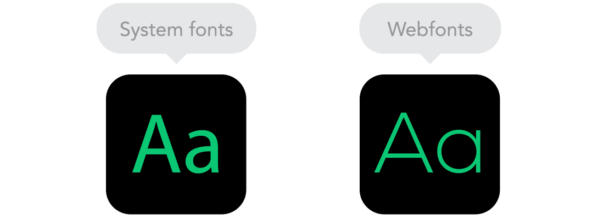
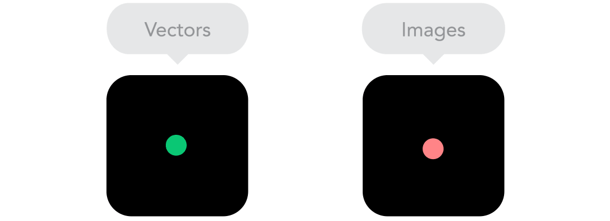

讓介面在手機、平板、桌機上都呈現完美體驗

max-width
min-width
思考：表格的 HTML / CSS 應該怎麼寫？每種策略的實作複雜度也不同。 ／綜合參考：elvery.net/demo/responsive-tables ↗

| 比較維度 | RWD 響應式設計 — 台灣高鐵 ↗ | AWD 自適應設計 — 591 ↗ |
|---|---|---|
| 運作方式 | 同一套 CSS，依 viewport 流動調整 | 偵測裝置類型，載入對應版本 |
| 版面切換 | 平滑漸進，無跳動感 | 需要切換時間，可能有閃爍 |
| 維護成本 | 單一版本，維護簡單 | 多套版本，維護成本高 |
| 客製化程度 | 較難針對特定裝置大幅客製 | 可為每個裝置提供最佳化體驗 |
| 適用情境 | 大多數網站的首選方案 | 對效能要求極高的大型產品 |


50% 永遠佔螢幕一半。
width: 100%; max-width: 1200px — 內容填滿螢幕但不超過 1200px，是常見的版心寫法。


position: relative，子元素相對容器定位，不受整體版面影響。

